library(bayesrules)
library(tidyverse)
library(cmdstanr)
library(posterior)
library(tidybayes)
# Plot stuff
clrs <- MetBrewer::met.brewer("Lakota", 6)
theme_set(theme_bw())
# Seed stuff
set.seed(1234)
BAYES_SEED <- 1234Reading notes
Approximating the posterior
6.1 Grid approximation
Beta-binomial example
\[ \begin{aligned} Y &\sim \operatorname{Binomial}(10, π) \\ \pi &= \operatorname{Beta}(2, 2) \end{aligned} \]
We can figure this posterior out mathematically using conjugate priors. If we know that Y = 9, then
\[ \pi \mid (Y = 9) \sim \operatorname{Beta}(2 + 9, 10 - 2 + 2) \rightarrow \operatorname{Beta}(11, 3) \]
But we can also do this with grid approximation:
# Create a grid of 6 pi values
grid_data <- tibble(pi_grid = seq(0, 1, length.out = 6)) |>
# Evaluate the prior and likelihood at each pi
mutate(prior = dbeta(pi_grid, 2, 2),
likelihood = dbinom(9, 10, pi_grid)) |>
# Approximate the posterior
mutate(unnormalized = likelihood * prior,
posterior = unnormalized / sum(unnormalized))
grid_data
## # A tibble: 6 × 5
## pi_grid prior likelihood unnormalized posterior
## <dbl> <dbl> <dbl> <dbl> <dbl>
## 1 0 0 0 0 0
## 2 0.2 0.96 0.00000410 0.00000393 0.0000124
## 3 0.4 1.44 0.00157 0.00226 0.00712
## 4 0.6 1.44 0.0403 0.0580 0.183
## 5 0.8 0.96 0.268 0.258 0.810
## 6 1 0 0 0 0
ggplot(grid_data, aes(x = pi_grid, y = posterior)) +
geom_point() +
geom_segment(aes(xend = pi_grid, yend = 0))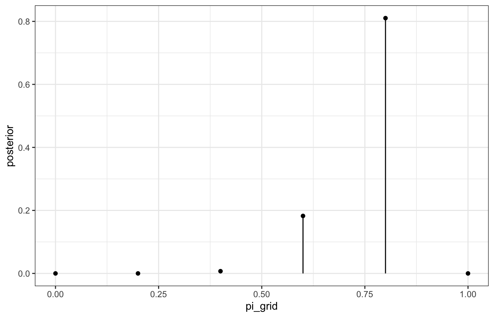
That’s our discretized posterior, but since there are only 6 values, it’s not great. If we sample from it, the samples will be just 0.6, 0.8, etc.:
posterior_samples <- grid_data |>
slice_sample(n = 10000, replace = TRUE, weight_by = posterior)
posterior_samples |> count(pi_grid)
## # A tibble: 3 × 2
## pi_grid n
## <dbl> <int>
## 1 0.4 56
## 2 0.6 1809
## 3 0.8 8135Let’s compare that to the actual \(\operatorname{Beta}(11, 3)\) posterior:
ggplot(posterior_samples, aes(x = pi_grid)) +
geom_histogram(aes(y = ..density..), color = "white", binwidth = 0.1, boundary = 0) +
stat_function(fun = ~dbeta(., 11, 3)) +
xlim(c(0, 1))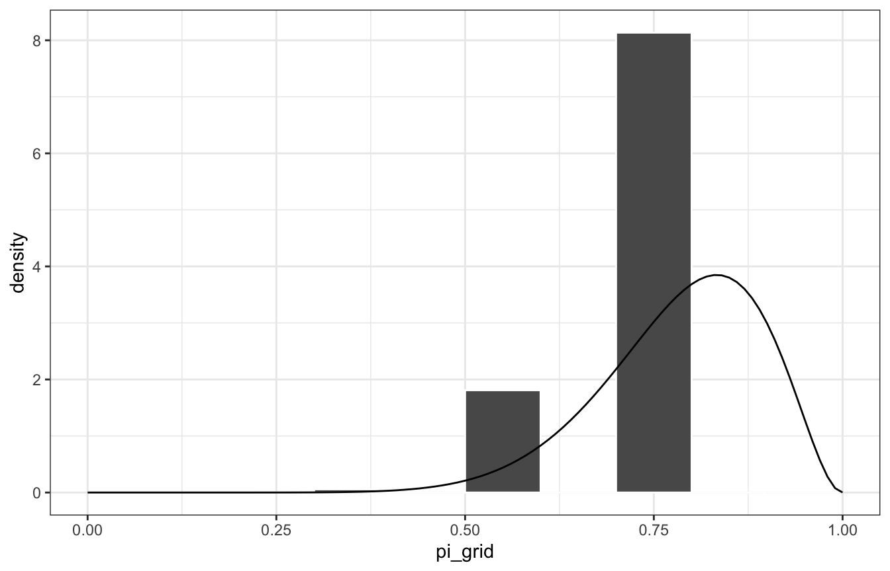
lol
Here’s the same grid approximation with 10,000 grid values this time:
grid_data <- tibble(pi_grid = seq(0, 1, length.out = 10000)) |>
mutate(prior = dbeta(pi_grid, 2, 2),
likelihood = dbinom(9, 10, pi_grid)) |>
mutate(unnormalized = likelihood * prior,
posterior = unnormalized / sum(unnormalized))
# Actual approximated posterior
ggplot(grid_data, aes(x = pi_grid, y = posterior)) +
geom_line()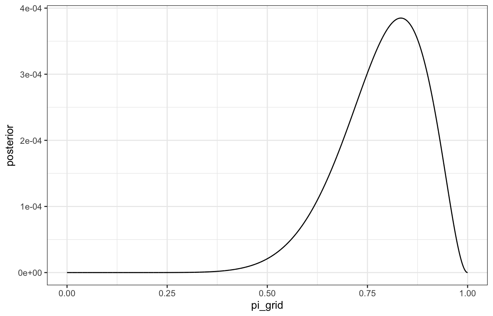
# Samples from the posterior
posterior_samples <- grid_data |>
slice_sample(n = 10000, replace = TRUE, weight_by = posterior)
ggplot(posterior_samples, aes(x = pi_grid)) +
geom_histogram(aes(y = ..density..), color = "white", binwidth = 0.01, boundary = 0) +
stat_function(fun = ~dbeta(., 11, 3)) +
xlim(c(0, 1))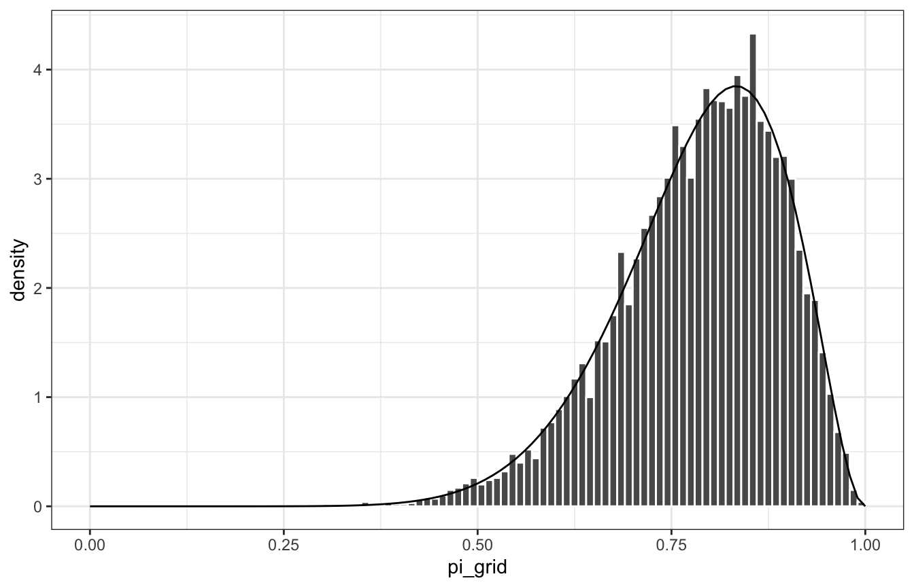
Gamma-Poisson example
\[ \begin{aligned} Y_i &\sim \operatorname{Poisson}(\lambda) \\ \lambda &= \operatorname{Gamma}(3, 1) \end{aligned} \]
If we see Y = 2 and then Y = 8, our true posterior based on conjugate family magic ends up being this:
\[ \lambda \mid Y = (2, 8) \sim \operatorname{Gamma}(3 + (2 + 8), 1 + 2) \rightarrow \operatorname{Gamma}(13, 3) \]
Grid time:
grid_data <- tibble(lambda_grid = seq(0, 15, length.out = 501)) |>
mutate(prior = dgamma(lambda_grid, 3, 1),
likelihood = dpois(2, lambda_grid) * dpois(8, lambda_grid)) |>
mutate(unnormalized = likelihood * prior,
posterior = unnormalized / sum(unnormalized))
# Actual approximated posterior
ggplot(grid_data, aes(x = lambda_grid, y = posterior)) +
geom_line()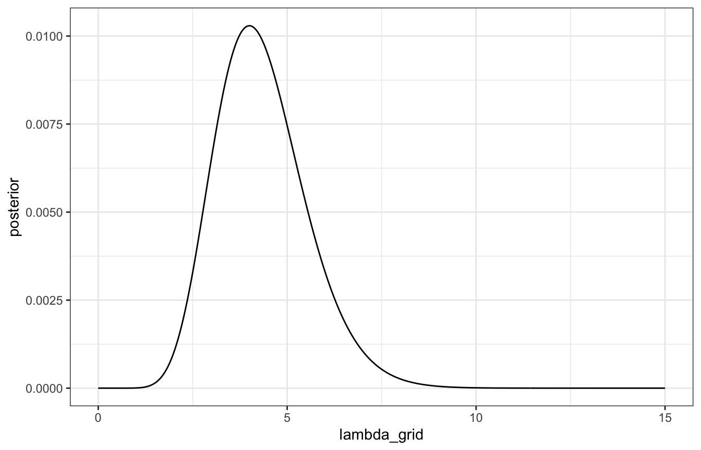
# Samples from the posterior
posterior_samples <- grid_data |>
slice_sample(n = 10000, replace = TRUE, weight_by = posterior)
ggplot(posterior_samples, aes(x = lambda_grid)) +
geom_histogram(aes(y = ..density..), color = "white", binwidth = 0.5, boundary = 0) +
stat_function(fun = ~dgamma(., 13, 3)) +
xlim(c(0, 15))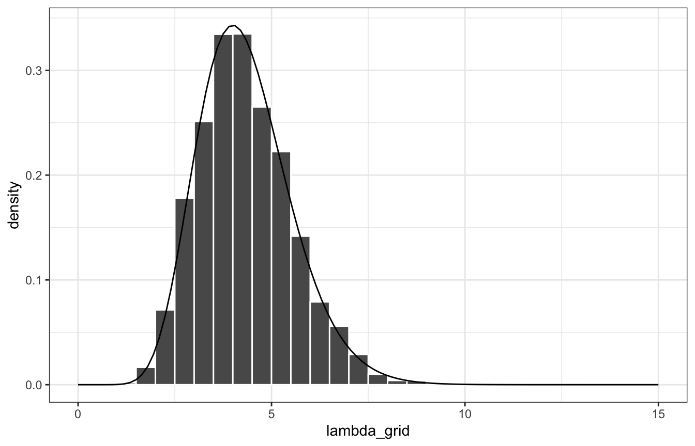
Lovely.
6.2 Markov chains via rstan
MCMC samples aren’t independent—each value depends on the previous value (hence “chains”). But you only need to know one previous value of \(\theta\) to calculate the next \(\theta\), so there’s no long history or anything. Also, the chain of \(\theta\) values aren’t even simulated from the posterior. But with magical MCMC algorithms, we can approximate the posterior with the values in the chains
Beta-binomaial
Let’s do this model again, but with Stan instead of with grid approximation:
\[ \begin{aligned} Y &\sim \operatorname{Binomial}(10, π) \\ \pi &= \operatorname{Beta}(2, 2) \end{aligned} \]
06-stan/bb_sim.stan
// Step 1: Define the model
// Stuff from R
data {
int<lower=0, upper=10> Y;
}
// Thing to estimate
parameters {
real<lower=0, upper=1> pi;
}
// Prior and likelihood
model {
Y ~ binomial(10, pi);
pi ~ beta(2, 2);
}bb_sim <- cmdstan_model("06-stan/bb_sim.stan")# Step 2: Simulate the posterior
# Compiled cmdstan objects are R6 objects with functions embedded in specific
# slots, which makes it hard to look them up in the documentation. ?CmdStanModel
# shows an index of all the available methods, like $sample()
bb_sim_samples <- bb_sim$sample(
data = list(Y = 9),
parallel_chains = 4, iter_warmup = 2500, iter_sampling = 2500,
refresh = 0, seed = BAYES_SEED
)
## Running MCMC with 4 parallel chains...
##
## Chain 1 finished in 0.0 seconds.
## Chain 2 finished in 0.0 seconds.
## Chain 3 finished in 0.0 seconds.
## Chain 4 finished in 0.0 seconds.
##
## All 4 chains finished successfully.
## Mean chain execution time: 0.0 seconds.
## Total execution time: 0.2 seconds.# cmdstan samples are also R6 objects with embedded functions. $draws() lets you
# extract the draws as an array
bb_sim_samples$draws(variables = "pi") |> head(4)
## # A draws_array: 4 iterations, 4 chains, and 1 variables
## , , variable = pi
##
## chain
## iteration 1 2 3 4
## 1 0.89 0.75 0.71 0.87
## 2 0.94 0.87 0.56 0.82
## 3 0.88 0.89 0.59 0.82
## 4 0.89 0.81 0.67 0.76
# Or we can use posterior::as_draws_array to avoid R6
# as_draws_array(bb_sim_samples)
# Or even better, use tidybayes
bb_sim_samples |>
spread_draws(pi) |>
head(4)
## # A tibble: 4 × 4
## .chain .iteration .draw pi
## <int> <int> <int> <dbl>
## 1 1 1 1 0.888
## 2 1 2 2 0.938
## 3 1 3 3 0.877
## 4 1 4 4 0.892The values in these chains aren’t independent. In chain 1 here, for instance, it starts with 0.89, then plugs that into the next iteration to get 0.94, then plugs that into the next iteration to get 0.88, then plugs that into the next iteration to get 0.89, and so on.
The chain explores the sample space, or range of posterior plausible \(\pi\)s. We want them to explore lots of values along their journey, and we can check that by looking at traceplots (to show the history of the chain) and density plots (to show the distribution of values that were visited)
# Look at the first 20, for fun
bb_sim_samples |>
gather_draws(pi) |>
filter(.iteration <= 20) |>
ggplot(aes(x = .iteration, y = .value, color = as.factor(.chain))) +
geom_line(size = 1) +
facet_grid(rows = vars(.variable), cols = vars(.chain)) +
labs(color = "Chain")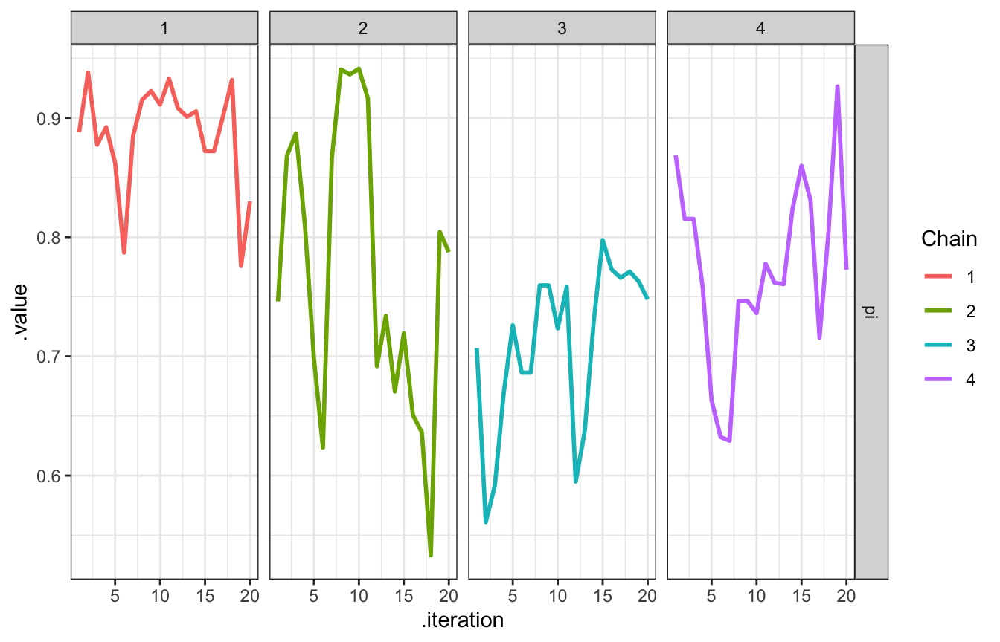
bb_sim_samples |>
gather_draws(pi) |>
ggplot(aes(x = .iteration, y = .value, color = as.factor(.chain))) +
geom_line(size = 0.1) +
facet_grid(rows = vars(.variable), cols = vars(.chain)) +
labs(color = "Chain")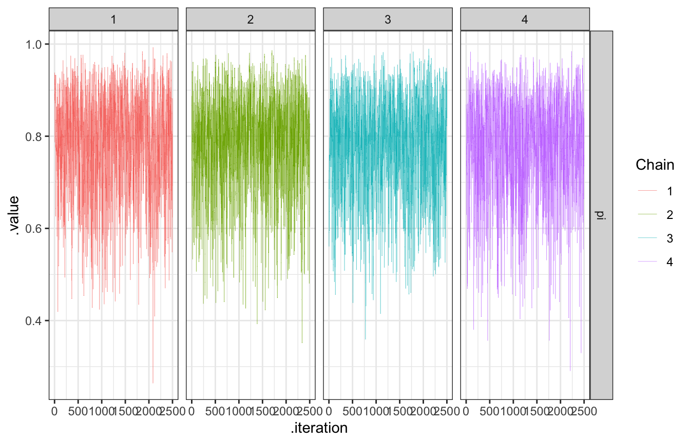
bb_sim_samples |>
gather_draws(pi) |>
ggplot(aes(x = .iteration, y = .value, color = as.factor(.chain))) +
geom_line(size = 0.1) +
labs(color = "Chain")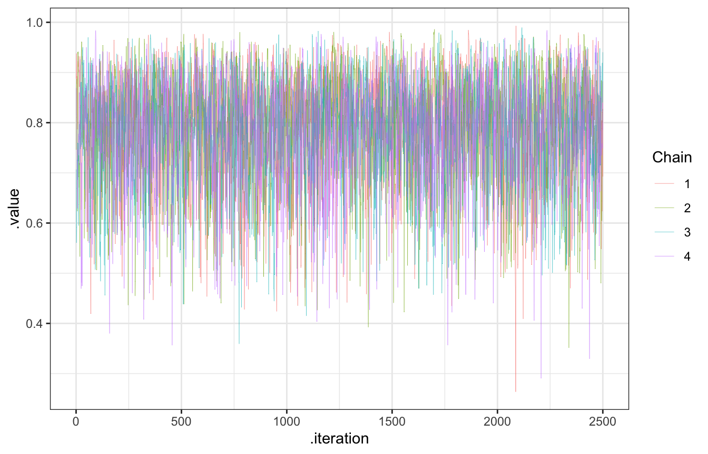
And here’s the distribution of the draws, which should be the same as the numeric \(\operatorname{Beta}(11, 3)\) posterior:
bb_sim_samples |>
spread_draws(pi) |>
ggplot(aes(x = pi)) +
stat_density(geom = "area", fill = clrs[1]) +
stat_function(fun = ~dbeta(., 11, 3), color = clrs[3], size = 1)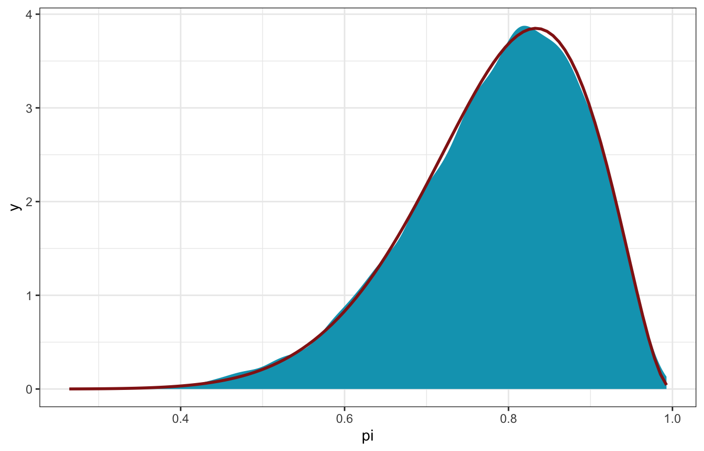
Gamma-Poisson
\[ \begin{aligned} Y_i &\sim \operatorname{Poisson}(\lambda) \\ \lambda &= \operatorname{Gamma}(3, 1) \end{aligned} \]
06-stan/gp_sim.stan
// Step 1: Define the model
// Stuff from R
data {
array[2] int Y;
}
// Thing to estimate
parameters {
real<lower=0, upper=15> lambda;
}
// Prior and likelihood
model {
Y ~ poisson(lambda);
lambda ~ gamma(3, 1);
}gp_sim <- cmdstan_model("06-stan/gp_sim.stan")# Step 2: Simulate the posterior
gp_sim_samples <- gp_sim$sample(
data = list(Y = c(2, 8)),
parallel_chains = 4, iter_warmup = 2500, iter_sampling = 2500,
refresh = 0, seed = BAYES_SEED
)
## Running MCMC with 4 parallel chains...
##
## Chain 1 finished in 0.0 seconds.
## Chain 2 finished in 0.0 seconds.
## Chain 3 finished in 0.0 seconds.
## Chain 4 finished in 0.0 seconds.
##
## All 4 chains finished successfully.
## Mean chain execution time: 0.0 seconds.
## Total execution time: 0.2 seconds.Check the chains:
gp_sim_samples |>
gather_draws(lambda) |>
ggplot(aes(x = .iteration, y = .value, color = as.factor(.chain))) +
geom_line(size = 0.1) +
labs(color = "Chain")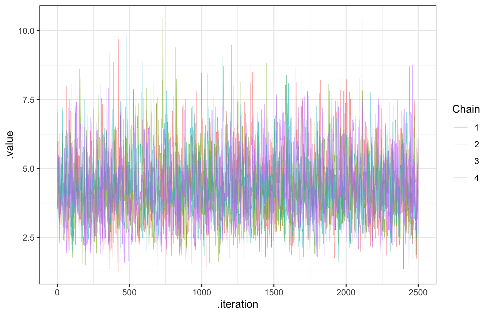
Compare the distribution with the true \(\operatorname{Gamma}(13, 3)\) posterior:
gp_sim_samples |>
spread_draws(lambda) |>
ggplot(aes(x = lambda)) +
stat_density(geom = "area", fill = clrs[2]) +
stat_function(fun = ~dgamma(., 13, 3), color = clrs[3], size = 1)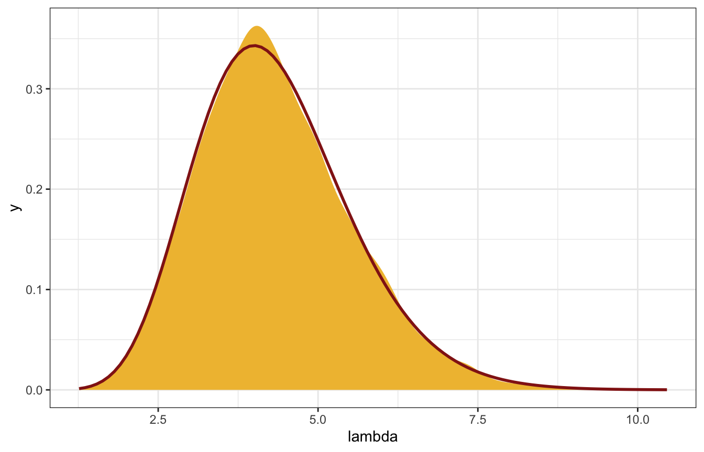
6.3: Markov chain diagnostics
6.3.1: Examining trace plots
Trace plots should look like nothing (“hairy caterpillars”). This indicates that the chains are stable, well-mixed, and converged:
gp_sim_samples |>
gather_draws(lambda) |>
ggplot(aes(x = .iteration, y = .value, color = as.factor(.chain))) +
geom_line(size = 0.1) +
labs(color = "Chain")We can also use trace rank plots (trank plots), where we take all the samples for a parameter (\(\lambda\) here), calculate their ranks, and make a histogram of those ranks colored by chain. According to McElreath (p. 284),
If the chains are exploring the same space efficinetly, the histograms should be similar to one another and largely overlapping.
Neat!
gp_sim_samples |>
spread_draws(lambda) |>
mutate(draw_rank = rank(lambda)) |>
ggplot(aes(x = draw_rank)) +
stat_bin(aes(color = factor(.chain)), geom = "step", binwidth = 500,
position = position_identity(), boundary = 0) +
labs(color = "Chain") +
theme(axis.text.y = element_blank(), axis.title.y = element_blank(), axis.ticks.y = element_blank())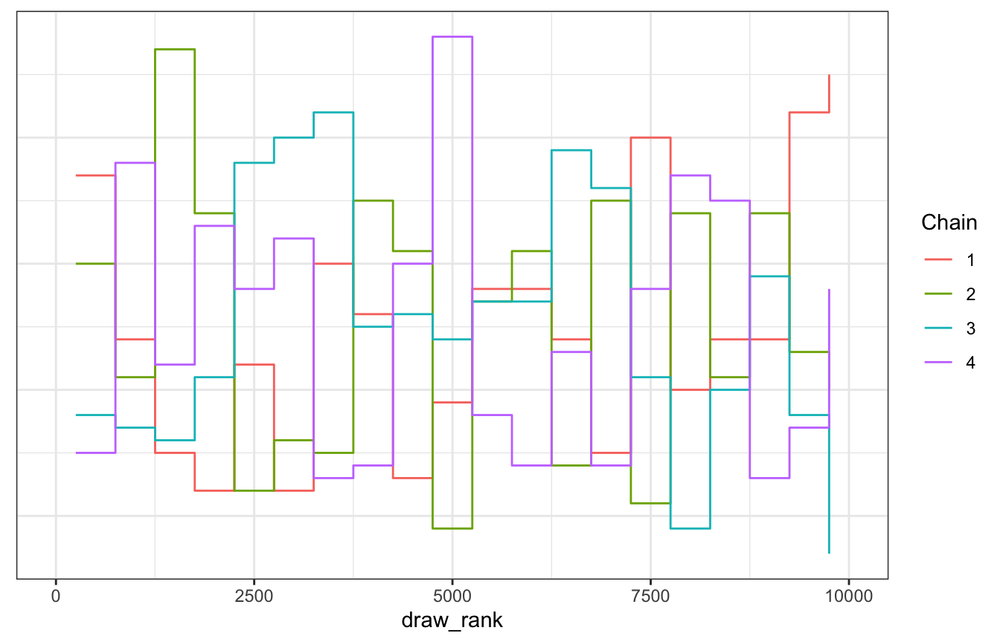
Here are some bad traceplots from Figure 6.12 in the book:
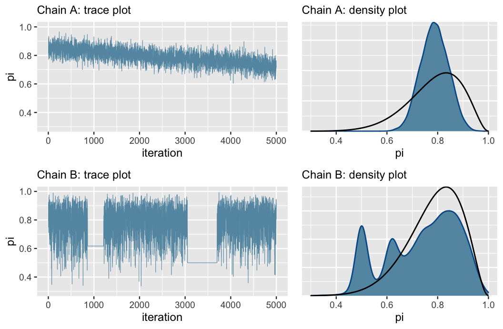
Chain A has a noticeable slope, which is a sign that it hasn’t stabilized. It hasn’t found a good range of possible \(\pi\) values. It is mixing slowly.
Chain B gets stuck when exploring smaller values of \(\pi\)
Fix these issues by (1) making sure the model and priors are appropriate, and (2) run the chain for more iterations.
6.3.2 Comparing parallel chains
We want to see consistency across the four chains. Check with a density plot:
gp_sim_samples |>
spread_draws(lambda) |>
ggplot(aes(x = lambda, color = factor(.chain))) +
geom_density() +
labs(color = "Chain")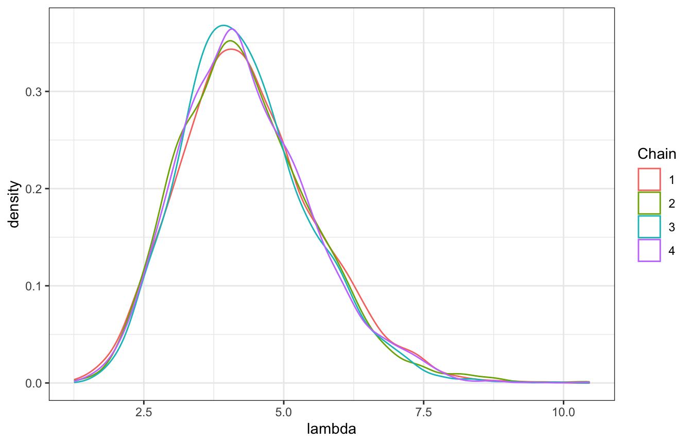
6.3.3. Effective sample size and autocorrelation
Since there are so many MCMC draws, it’s tricky to know what the actual sample size is. “How many [truly] independent sample values would it take to produce an equivalently accurate posterior approximation?” That’s what the effective sample size ratio is for:
\[ \frac{N_\text{effective}}{N} \]
There’s no official rule for this, but it would be bad if a chain had a ratio of less than 0.1, or where the effective sample size is less than 10% of the actual sample size.
For both of these models the ratio is 34ish%, which means “our 20,000 Markov chain values are about as useful as only 6800 independent samples (0.34 × 20000).”
bayesplot::neff_ratio(bb_sim_samples)
## pi
## 0.3423651
bayesplot::neff_ratio(gp_sim_samples)
## lambda
## 0.3456354The bayesplot::neff_ratio() uses the ess_basic summary statistic, which Aki Vehtari says is fine here. We can also extract the ESS basic statistic with posterior::ess_basic():
posterior::ess_basic(bb_sim_samples$draws(variables = "pi"))
## [1] 3401.823However, in the documentation for ess_basic(), the Stan team strongly recommends using either ess_bulk or ess_tail, both of which are reported by default in summary() (and also in rstanarm and brms models):
posterior::ess_bulk(bb_sim_samples$draws(variables = "pi")) / 10000
## [1] 0.3114404
posterior::ess_tail(bb_sim_samples$draws(variables = "pi")) / 10000
## [1] 0.3960722
bb_sim_samples$summary() |>
select(variable, mean, median, ess_bulk, ess_tail)
## # A tibble: 2 × 5
## variable mean median ess_bulk ess_tail
## <chr> <dbl> <dbl> <dbl> <dbl>
## 1 lp__ -7.80 -7.52 4526. 4831.
## 2 pi 0.785 0.800 3140. 3991.We can also look at autocorrelation. There’s inherently some degree of autocorrelation, since each draw depends on the previous one, but we still want draws to bounce around and to not be too correlated after a few lagged periods.
We can check this with an autocorrelation plot. This shows the correlation between an MCMC draw and the one before it at different lags. When the lag is 0, there’s perfect correlation (since it’s the correlation between the draw and itself). At lag 1, there’s a correlation of 0.5 between a draw and its previous value, and it drops off to near 0 by the time we get to 5 lags. That’s good.
[T]here’s very little correlation between Markov chain values that are more than a few steps apart. This is all good news. It’s more confirmation that our Markov chain is mixing quickly, i.e., quickly moving around the range of posterior plausible π values, and thus at least mimicking an independent sample.
# Boring bayesplot way
# mcmc_acf(bb_sim_samples$draws(variables = "pi"))
autocor_manual <- bb_sim_samples |>
spread_draws(pi) |>
group_by(.chain) |>
nest() |>
summarize(autocor = map(data, ~{
x <- acf(.$pi, plot = FALSE, lag.max = 20)
tibble(lag = x$lag, acf = x$acf)
})) |>
unnest(autocor)
ggplot(autocor_manual, aes(x = lag, y = acf, color = factor(.chain))) +
geom_line() +
scale_x_continuous(breaks = 0:20) +
labs(x = "Lag", y = "Autocorrelation", color = "Chain") +
theme(panel.grid.minor = element_blank())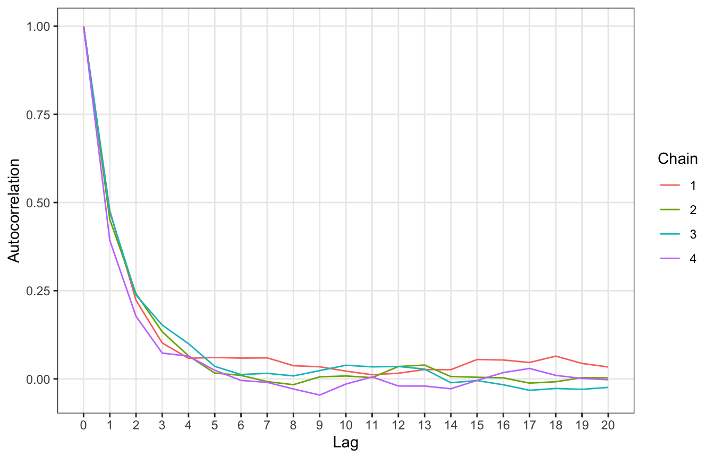
Finally, we can look at \(\hat{R}\) or R-hat. R-hat looks at the consistency of values across chains:
R-hat addresses this consistency by comparing the variability in sampled π values across all chains combined to the variability within each individual chain
\[ \hat{R} \approx \sqrt{\frac{\operatorname{Variability}_\text{combined}}{\operatorname{Variability}_\text{within}}} \]
We want R-hat to be 1. When R-hat > 1, it means there’s instability across chains, and more specifically that “the variability in the combined chains exceeds that within the chains. R-hat > 1.05 is bad (and the Stan people have recently considered thinking about 1.01 as a possible warning sign, and proposed alternative mixing statistics, like R*).
Basically we want the variability across the chains to look just like the variability within the chains so that it’s impossible to distinguish between them in a trace plot. Can you see any rogue chains here? Nope. We’re good.
rhat_basic(bb_sim_samples$draws(variables = "pi"))
## [1] 1.000178bb_sim_samples |>
gather_draws(pi) |>
ggplot(aes(x = .iteration, y = .value, group = .chain)) +
geom_line(size = 0.1) +
labs(color = "Chain")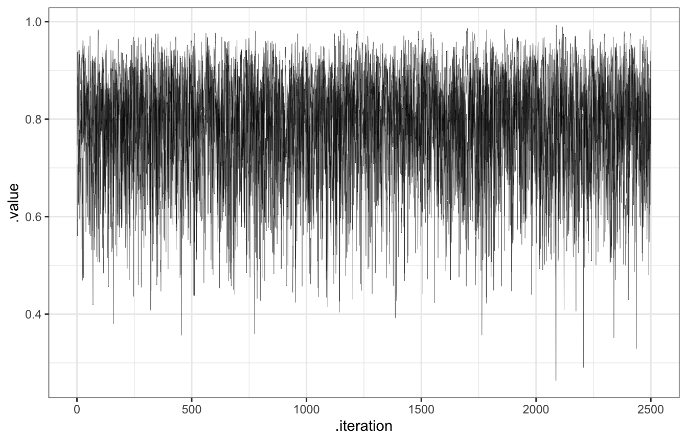